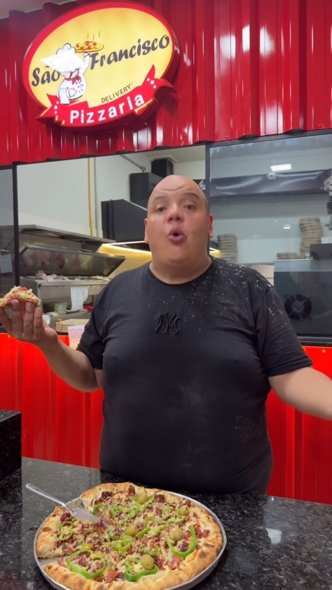
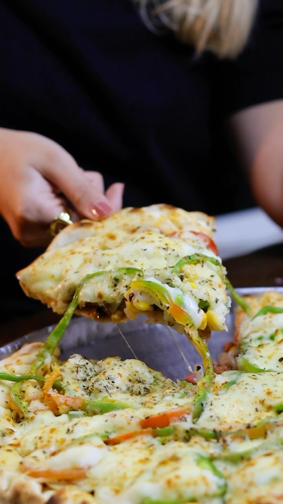
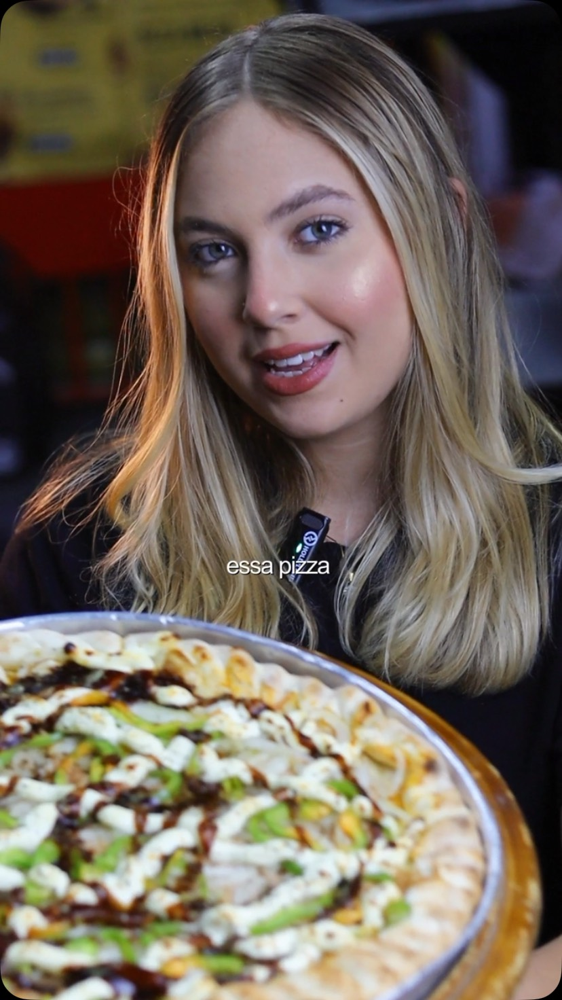
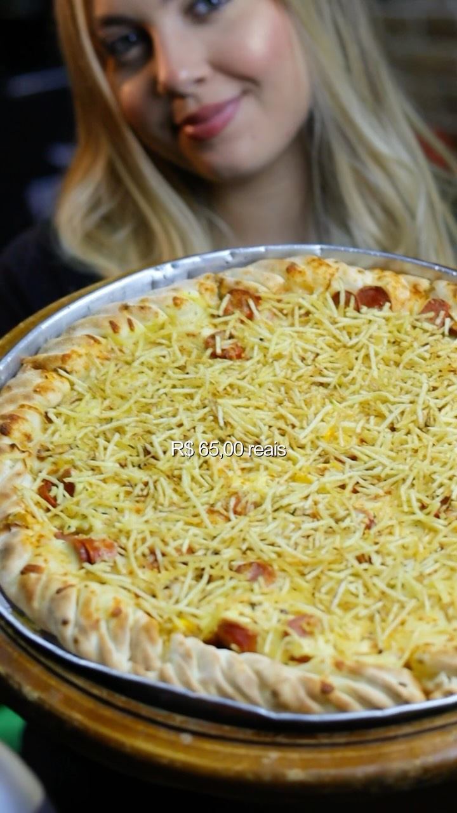
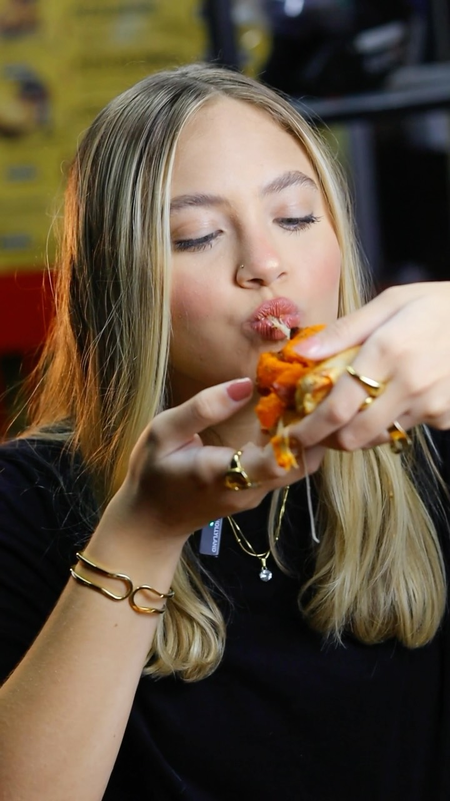
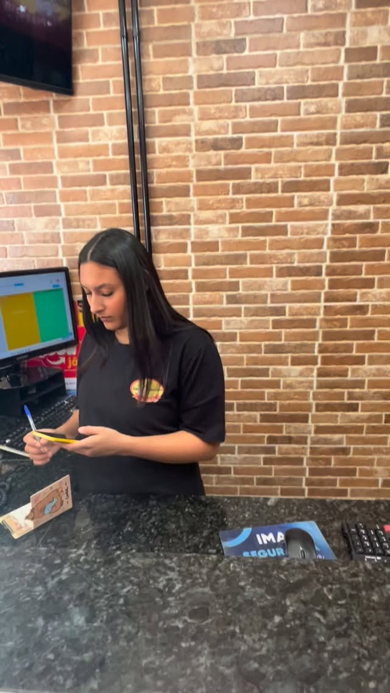
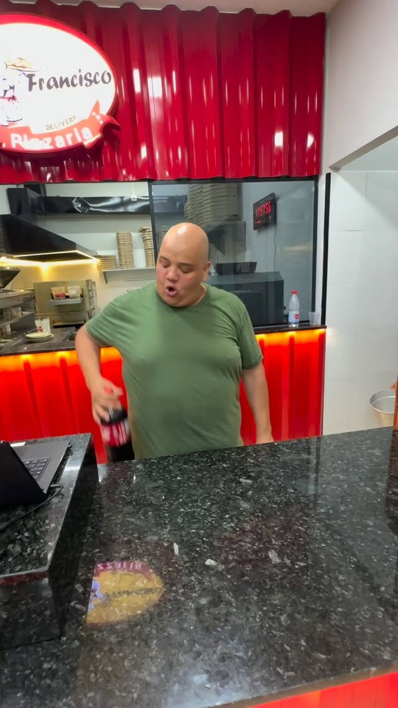
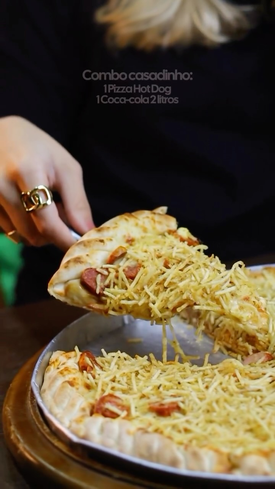

— nº 01
Pizzas
O carro-chefe da casa há mais de 12 anos, feitas com produtos selecionados de qualidade.
Pedir pizza →Na R. Cap. Joaquim Manoel Pereira, 192, em Limeira. Pizzas, linguiça, hot dogs e Coca-Cola — com produtos selecionados e o capricho de sempre. E na quarta, a entrega é grátis.
Toda quarta-feira, o delivery da Pizzaria São Francisco sai sem taxa de entrega. Escolha no cardápio abaixo e peça pelo WhatsApp.
Pedir com entrega grátis →Toque em Pedir na categoria que quiser: o WhatsApp abre com o pedido já escrito. Sabores e valores do dia, a equipe confirma com você no atendimento.

O carro-chefe da casa há mais de 12 anos, feitas com produtos selecionados de qualidade.
Pedir pizza →
Linguiça do jeito que o bairro gosta — um dos itens pelos quais a São Francisco é conhecida em Limeira.
Pedir linguiça →
Hot dogs para acompanhar a pizza — ou para ser o prato principal da noite.
Pedir hot dog →
Coca-Cola gelada para acompanhar — peça junto com a pizza e receba tudo de uma vez.
Pedir Coca-Cola →
“Pizzaria São Francisco está a mais de 12 anos trabalhando para melhor atender, com produtos selecionados de qualidade.” É assim que a casa se apresenta — e é assim que o bairro a conhece, com 13 mil seguidores acompanhando pelo Instagram.
Fotos reais publicadas pela Pizzaria São Francisco.



R. Cap. Joaquim Manoel Pereira, 192 — Limeira, SP, 13483-281 · WhatsApp (19) 97124-0647